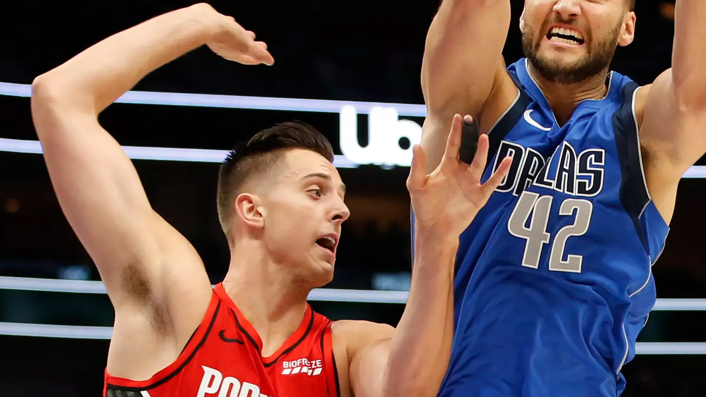
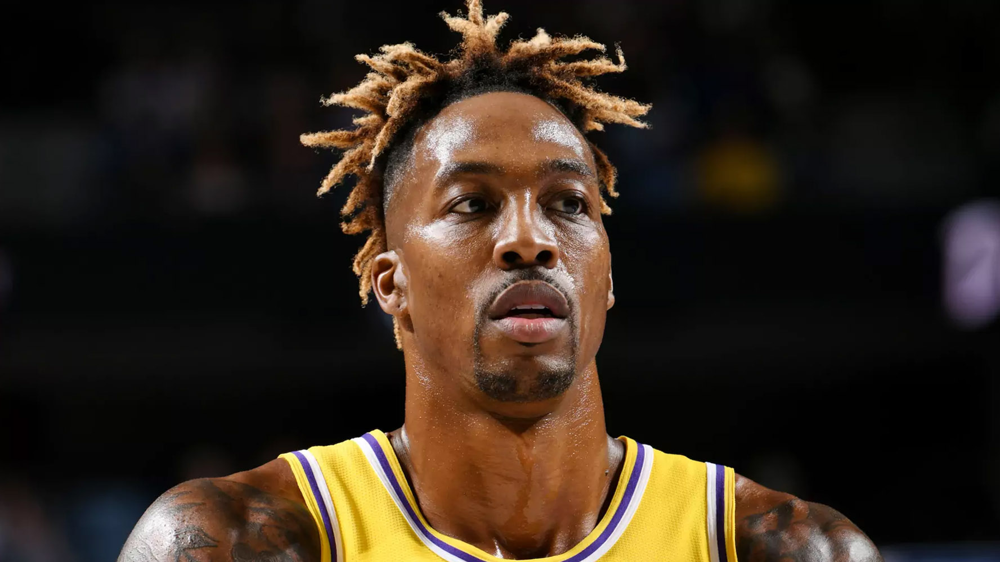

Gregg Popovich congratulates American sprinter John Carlos before Hall of Fame induction

SAN ANTONIO -- San Antonio Spurs coach Gregg Popovich shared a portion of the contents of a congratulatory note sent recently to American sprinter John Carlos, who will be inducted Friday along with Tommie Smith into the U.S. Olympic and Paralympic Hall of Fame.
Carlos and Smith will be inducted into the Hall more than 50 years after raising their fists in protest of racism at the 1968 Olympic games in Mexico City.
“I actually used the word ‘long overdue’,” Popovich said he wrote in the note.
“Then I gave him a little bit of crap on the side. But to see it just brought a great smile, not just to my face, but our coaches and the players who were here when he came in and talked to him. He’s a special guy.”
Carlos and Smith created one of the most enduring images of the civil rights movement with their silent protest at the 1968 Olympics in Mexico City. The moment resulted in a national firestorm after Smith and Carlos bowed their heads and raised black-gloved fists on the medal stand after they captured first and third, respectively, in the 200-meter final.
Carlos visited the Spurs back in 2015 to share his story with the team.
“I communicated to Dr. John [Carlos] because he has been kind enough to come in and talk to our team in the past, and we have kept up a pretty good relationship,” Popovich said. “He’s somebody who has suffered a great deal, and it just seems like it always takes those kinds of acts that he and Tommie Smith participated in to make social activism get to the point where something actually happens because people who are in their comfortable positions -- white people -- don’t really get it.”
Carlos’ and Smith’s protest came with harsh repercussions, as the two received death threats and widespread condemnation from the public back home in America. The U.S. track and field team suspended both and sent them home from the Olympics. They were vilified for several years, and experienced homelessness and unemployment as a result of their protest at the Olympics.
“It’s always, ‘In time, it will come,’” Popovich added. “And they have no feeling for what a person of color experiences on a minute-to-minute basis; not just physically but psychologically, opportunity-wise, all that sort of thing. So, for them to do what they did, knowing full-well, being intelligent people, that it was going to limit their opportunities for the rest of their lives probably, and they did it anyway … that’s huge. That’s like a Muhammad Ali moment, what they did. Great credit, which isn’t what they were looking for, but kudos for great courage and being able to do that under ridiculously difficult circumstances.”
Blazers' Collins to undergo shoulder surgery
Portland's already thin frontcourt has reportedly suffered another blow. Jason Quick of The Athletic tweeted that Zach Collins will undergo surgery on the left shoulder that was dislocated during the Blazers' 121-119 win over Dallas last Sunday.
The 10th overall pick of the 2017 Draft, Collins is averaging a career-high 28.7 minutes for the depleted Blazers, who are already without center Jusuf Nurkic. Any prolonged absence by Collins would leave Hassan Whiteside, Skal Labissiere and Moses Brown as Portland's only true big men.
The Blazers, who advanced to the Western Conference finals last season, were 3-2 entering Saturday's game against Philadelphia.
Jazz center Ed Davis suffers fractured left fibula

The following is a medical update on Utah Jazz center/forward Ed Davis:
Davis (6-9, 218, North Carolina) was examined Friday by the Utah Jazz medical staff including X-ray and MR imaging. This evaluation revealed a fractured left fibula that was sustained on Nov. 1 at Sacramento. Davis will be reevaluated in four weeks. Further updates will be provided when appropriate.
Warriors forward Draymond Green (finger) out next few games

The injury bug in Golden State has sidelined another key member of the Warriors' rotation.
Draymond Green has been ruled out for "the next few games" with a torn ligament in his left index finger, Steve Kerr told reporters before Saturday's game against the Charlotte Hornets. Green sustained the injury during Friday's 127-110 setback to the San Antonio Spurs.
"It's pretty sore," Green told reporters after the game, via ESPN. "I couldn't grip the ball the whole entire [game], probably since the second quarter, which is why I was making a lot of one-handed, right-handed passes and dribbling left with my right hand."
The injury to Green's finger occurred the same day Curry underwent surgery for a broken left hand, which will keep the All-Star guard on the shelf for at least three months. Curry joined teammate Klay Thompson, who is recovering from surgery to repair a Torn ACL in his left knee, on the Warriors' injured list.
Green's injury doesn't appear to be as severe, but Warriors coach Steve Kerr mentioned before Friday's game that the team will play it safe with their former Kia Defensive Player of the Year.
"The one thing we won't do is run [Green] into the ground," Kerr said, via ESPN. "We have to maintain a good schedule with Draymond minutes-wise and games-wise. If he's banged up, we should make sure we take care of him."
In more injury news, guard D’Angelo Russell will not play against Charlotte with a right ankle sprain.
NBA: Dwight Howard fouled Seth Curry in final seconds of regulation
During the final play of regulation in the Los Angeles Lakers' 119-110 overtime win over the Dallas Mavericks on Friday, Lakers center Dwight Howard was not called for an offensive foul that he committed, per the NBA.
The league released its Last Two Minute Report on Saturday, which acknowledged that Howard grabbed and held Mavericks guard Seth Curry with 3.5 seconds remaining. The foul -- described as an incorrect non-call -- delayed Curry's effort to contest Danny Green's jump shot.
Green made the game-tying 3 at the buzzer and sent the game to overtime.
Pistons' Reggie Jackson out four weeks with stress reaction in back
DETROIT (AP) — Detroit Pistons guard Reggie Jackson is out at least four weeks with a back injury, the team announced Saturday.
Jackson, who played the season’s first two games but has missed the last four, has a stress reaction in his lower back. The team announced treatment and rehabilitation is under way and he will be re-evaluated in four weeks.
The Pistons (2-4) also have been without All-Star Blake Griffin for the first six games, and he also is listed as out for Saturday’s game against Brooklyn with his lingering soreness in his left knee and hamstring. It was announced before the season that Griffin would be re-evaluated in early November.
First-round pick Sekou Doumbouya also has not played for the Pistons after suffering a concussion in training camp.
Jackson, 29, averaged 5.0 points and 4.0 assists in 18.0 minutes in two games this season. He played all 82 games last season, scoring 15.4 points per game to bring his career average up to 12.9 points per game entering the season.
Detroit’s backup point guards, Derrick Rose (right hamstring tightness) and Tim Frazier (right shoulder strain), were both listed as questionable for Saturday, one night after the Pistons lost 112-106 in Chicago.
LeBron James, Luka Doncic make NBA history with opposing triple-doubles

History can happen. Any night. Any players.
And when generational talents like LeBron James and Luka Doncic face off, you end up with Friday's thrilling overtime edition of "Can You Top This?"
James led the Lakers to victory with 39 points, 12 rebounds, 16 assists and four steals -- the first Laker to clear the 30-10-15 mark since Magic Johnson in 1990. That marked James' 82nd career triple-double, and 30th with at least 30 points.
Doncic put up 31 points, 13 rebounds and a career-high 15 assists in a valiant defeat, the 10th triple-double of his career, and first 30-10-15 for the Mavericks since Jason Kidd in January 1996.
It was the first time in NBA history opposing players each recorded at least 30-10-15 triple-doubles in the same game. Doncic became the youngest player, and James the oldest, to put up that stat line.
James also scored eight of the Lakers' 16 points in the extra period as they quickly pulled away to seal the 119-110 victory. Doncic put up seven in OT to cap his outing.
Stephen Curry has surgery on hand, out as least 3 months
Update: Stephen Curry underwent surgery on his broken left hand and the Golden State Warriors say he will miss at least three months but is expected to make a full recovery.
After trailing the Phoenix Suns at home by more than 30 before halftime on Wednesday, Golden State saw Curry exit the game with an apparent left wrist injury. Shortly thereafter came word that Curry had suffered a broken left hand. He had a CT scan on Thursday, and the Warriors announced the recovery timetable on Friday.
The two-time Kia MVP initially came up grimacing after being sandwiched between two Suns defenders on a drive to the rim.
Curry drove to his left defended by Kelly Oubre Jr. and with big man Aron Baynes standing solidly in the paint. Curry leapt with the ball then came down head first landing hard and awkwardly on his hands to brace himself from the court, with Baynes crashing onto Curry’s left hand. Curry grimaced in pain grabbing at his fingers then walked to the locker room with 8:31 left in the third quarter.
Curry did not attempt his two free throws, and instead went immediately to the locker room for further evaluation. The Warriors guard finished the game with nine points, six assists and five rebounds in 21 minutes of action.
“Aron Baynes came up after the game and just wanted to know how Steph was doing,” Warriors coach Steve Kerr said. “You could tell he felt really bad. It’s just a random basketball play, so stuff happens.”
Curry had started the game hot, scoring seven points in the first three minutes. Then Phoenix ripped off an incredible 30-1 run, further emphasizing the defensive struggles with which Golden State has started the season. The Suns wound up winning 121-110, Golden State's third double-digit loss in less than a week.
Now the Warriors face an even crueler road than when the season began. With Kevin Durant now in Brooklyn and Klay Thompson recovering from a torn ACL, Golden State had already lost half its usual All-Star cast. The burden fell on Curry and Draymond Green to lead a team of newcomers, rookies and former G League standouts through a brutal Western Conference.
The Warriors trailed 72-46 at halftime Wednesday after falling behind 70-37 at the break in Oklahoma City on Sunday.
If Curry does indeed miss extended time, that burden now shifts to Green and D'Angelo Russell to carry a franchise that seemed all but unbeatable until this year's rash of injuries.
“Of course it hurts knowing that Steph Curry’s down,” said rookie Eric Paschall, who made his first career start and scored a team-high 20 points. "... That’s a very, very valuable piece of our team but I feel like we’re going to stay positive.”
Warriors' Stephen Curry (hand) out at least 3 months
SAN FRANCISCO (AP) -- Stephen Curry will miss at least three months for the ailing Warriors because of a broken left hand that required surgery, the toughest blow yet early in an already difficult season for struggling Golden State following five straight trips to the NBA Finals.
Now, both Splash Brothers are on the sidelines, leaving Golden State thin in the backcourt while facing a 1-3 record and just trying to stay in games. Klay Thompson is recovering from surgery July 2 for a torn ACL in his left knee that he injured June 13 in Game 6 of the NBA Finals that won Toronto its first championship.
Before Friday night's game against San Antonio, Warriors coach Steve Kerr acknowledged his team's incredible injury misfortune, dating back to the Finals last spring when star forward Kevin Durant was lost to a ruptured Achilles tendon shortly before Thompson went down.
However, Kerr also stressed he didn't want his players dwelling on the negative with so much season still ahead.
"It's just insane what's happened," Kerr said. "But we've had a lot of good fortune here too over the years. So we don't spend too much time thinking about what it all means. We just push forward and try to do our jobs."
Curry underwent surgery Friday on the hand and second metacarpal of his index finger, and the team said he will miss at least three months but is expected to make a full recovery.
The Warriors announced Curry had undergone surgery Friday morning performed by Dr. Steven Shin at the Cedars-Sinai Kerlan-Jobe Institute in Los Angeles. An update on his progress is planned after three months, which would be early February. If he makes that timeline or close to it that would give Curry about 30 games remaining in the regular season.
He has indicated he wants to play for the U.S. team at the 2020 Tokyo Olympics, so Curry likely would prefer to play games before that.
Specialists examined a CT scan Curry had Thursday, a day after the two-time MVP broke his non-shooting hand in the third quarter of a 121-110 home loss to the Phoenix Suns.
Kerr had planned to spend Thursday meeting with his coaching staff to prepare for how to move forward playing another man down.
He referenced Spurs coach Gregg Popovich, who Kerr played under during his own career, as a leader who knew how to put seemingly disastrous situations into perspective for his players.
In his own pregame media session Friday, Popovich was asked about the coaching challenge facing Kerr in light of Curry's injury, and Popovich predicted his former player wouldn't coach the Warriors any differently.
"It's not like he flips the script and teaches them something different," the Spurs coach said. "Same fundamentals on both ends of the court. Whoever's here next year will benefit from the teaching and competitiveness this year.
"They won't miss a beat. They'll just go on. Chances are they won't be in the Finals, but that's not the point."
The Warriors, who follow Friday's game by hosting Charlotte on Saturday, are also missing forward Kevon Looney.
He went into the weekend having missed four straight games because of a right hamstring injury and is scheduled to be evaluated early next week by a team of specialists because of an "on-going presence of a neuropathic condition in his body, which has a direct correlation to his recent injury."
Looney is limited to controlled workouts with the training staff for now.
Curry was injured while driving to his left while defended by Kelly Oubre Jr. and with big man Aron Baynes standing in the paint. Curry leapt with the ball then came down head first, landing awkwardly on his hands as he tried to brace himself. Baynes then landed on Curry's left hand.
The 31-year-old Curry grimaced in pain, grabbing at his fingers then walking to the locker room.
13 facts to know from 2019-20 NBA Roster Survey
The new season is underway and with it comes the NBA's annual (and very detailed) analysis on each team in the league. In the annual NBA Roster Survey, the league breaks down rosters by height, weight, age, league experience and more for every player on opening-night rosters.
Note: The survey compiles data for rosters as of opening night, not rosters as of today. Players on two-way contracts are not included in the survey.
1. The average NBA player is 6-foot-6.54, 219.33 pounds, 26.18 years old and 4.59 season of NBA experience.
2. Golden State’s Glenn Robinson III most closely resembles the average NBA player based on height, weight age and experience. Robinson: 6-6, 222 pounds, turns 26 in January, has played five NBA seasons (through 2018-19).
3. Atlanta’s Vince Carter, playing his record 22nd NBA season, is the league’s oldest player at 42. The next oldest are Udonis Haslem (Miami) and Pau Gasol (Portland) at 39 years old.
4. Detroit’s Sekou Doumbouya is the youngest player at 18; he turns 19 on Dec. 23. The next youngest player is Talen Horton-Tucker (Los Angeles Lakers), who turns 19 on Nov. 25.
5. The 14 youngest players on NBA opening-night rosters were all born in 2000, the same year that Vince Carter won the dunk contest and finished his second NBA season.
6. Nos. 0 and 5 are the most popular jersey numbers, worn by 20 players each. The next most popular are No. 1, No. 8 and No. 11, which have 19 players each. No. 3 was the most popular jersey last season with 20 players. (No. 3 has 17 players this season.)
7. Kentucky is the school with the most players on opening-night rosters (28) for the eighth straight year. Duke (23 players) and North Carolina (14) are next on the list.
8. Rosters include 108 international players from 38 countries and territories.
9. A record 42% of players have NBA G League experience.
10. Team age ranges from an average of 24.49 years for Phoenix to 30.24 years for Houston.
11. Team experience ranges from an average of 2.73 years for Boston to 8.93 years for Houston.
12. Dallas has the two tallest players: 7-4 Boban Marjanović and 7-3 Kristaps Porzingis. In fact, five of the six tallest players are international players.
13. Only 10 players are older than LeBron James, who turns 35 on Dec. 30. The players who are older than him? J.J. Barea, Thabo Sefolosha, Andre Iguodala, Tyson Chandler, Nene, Kyle Korver, Pau Gasol, Udonis Haslem and Vince Carter.